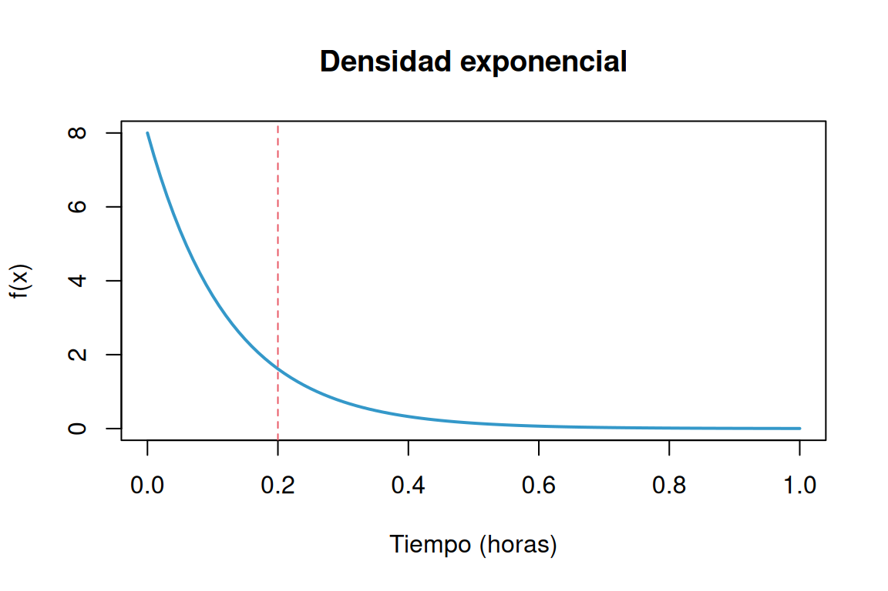
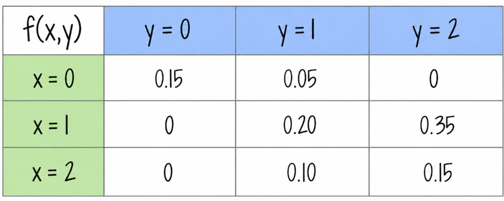
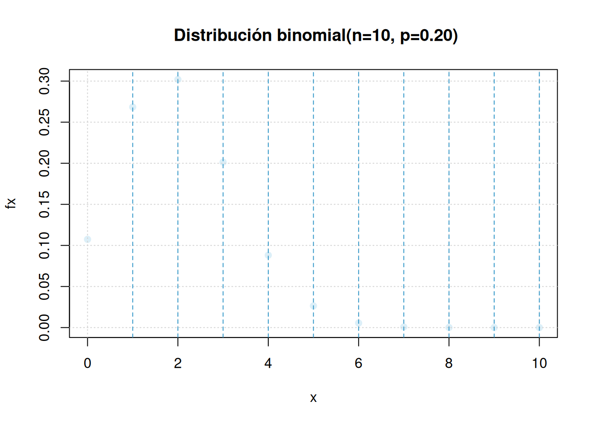

Clasifique las siguientes variables aleatorias como discretas o continuas:
El tiempo que pasa, en horas, para que un radar detecte entre conductores sucesivos a los que exceden los límites de velocidad es una variable aleatoria continua con una función de distribución acumulada:
\[F_{_{X}}(x) = \left \{ \begin{matrix} 0 & \mbox{ , } x \leq 0\\ 1-exp\{-8x \} & x \geq 0 \end{matrix}\right. \]
Calcule la probabilidad de que el tiempo que pase para que el radar detecte entre conductores sucesivos a los que exceden los límites de velocidad sea menor a 12 minutos
Primero se convierten los minutos a horas: \(12/60=0.2\) horas.
\[ f_X(x)=\begin{cases}8e^{-8x},&x>0,\\0,&x<0.\end{cases} \]
El valor de la densidad en \(x=0\) no afecta las probabilidades. Por tanto,
\[P(X<0.2)=\int_0^{0.2}8e^{-8x}\,dx=[-e^{-8x}]_0^{0.2}\approx0.798103.\]
La probabilidad es aproximadamente 79.81%.
curve(dexp(x, rate = 8), from = 0, to = 1, col = c31, lwd = 2,
xlab = "Tiempo (horas)", ylab = "f(x)", main = "Densidad exponencial")
abline(v = 0.2, lty = 2, col = c21)
Una variable aleatoria continua \(X\), que puede tomar valores entre \(x=2\) y \(x=5\), tiene una función de densidad data por:
\[ f_X(x)= \begin{cases} \dfrac{2(1+x)}{39}, & 2\leq x\leq 5, \\[6pt] 0, & \text{en otro caso}. \end{cases} \]
Calcule:
Suponga que cierto tipo de pequeñas empresas de procesamiento de datos están tan especializadas que algunas tienen dificultades para obtener utilidades durante su primer año de operación. La función de densidad de probabilidad está dada por:
\[f_{_{Y}}(y) = \left \{ \begin{matrix} ky^4 (1-y)^3 & \mbox{ , } 0 \leq y \leq 1\\ 0 & \mbox{en otro caso } \end{matrix}\right. \]
En un grupo de 10 estudiantes que participan en un proyecto universitario, 5 pertenecen a Ingeniería Industrial, 2 a Finanzas y 3 a Administración de Empresas. Para conformar un equipo de trabajo se seleccionan aleatoriamente 4 estudiantes, sin reemplazo.
Sea \(X\) el número de estudiantes de Ingeniería Industrial seleccionados. Determine la función de probabilidad de \(X\) y explique sus resultados utilizando una fórmula apropiada.
En una cafetería universitaria hay 6 pedidos listos para entregar: 4 tienen un tiempo estimado de entrega de 10 minutos cada uno y 2 de 5 minutos cada uno. Un domiciliario selecciona aleatoriamente 3 pedidos, sin reemplazo, para realizar su siguiente recorrido.
Sea \(T\) la suma de los tiempos estimados de entrega de los tres pedidos seleccionados.
Determine la función de probabilidad de \(T\) y represente gráficamente la distribución obtenida.
Con base en las pruebas extensas, el fabricante de una lavadora determinó que el tiempo \(Y\) (en años) para que el electrodoméstico requiera una reparación mayor se obtiene mediante la siguiente función de densidad de probabilidad :
\[f_{_{Y}}(y) = \left \{ \begin{matrix} \dfrac{1}{4} exp\{-y/4\} & \mbox{ , } y \geq 0\\ 0 & \mbox{en otro caso } \end{matrix}\right. \]
Los críticos considerarían que la lavadora es una ganga si no hay una probabilidad de que requiera una reparación mayor antes del sexto año. ¿Se puede considerar la lavadora como una ganga?
¿Cuál es la probabilidad de que a lavadora requiera una reparación mayor durante el primer año?
Represente la función \(f(x)\) gráficamente
Sea el número de llamadas telefónicas que recibe un conmutador durante un intervalo de 5 minutos una variable aleatoria \(X\) con la siguiente función de distribución de probabilidad:
\[ f_X(x)= \begin{cases} \dfrac{e^{-2}2^x}{x!}, & x=0,1,2,3,\ldots, \\[6pt] 0, & \text{en otro caso}. \end{cases} \]
El congestionamiento de pasajeros es un problema de servicio en los aeropuertos, en los cuales se instalan trenes para reducir la congestión. cuando se usa el tren el tiempo \(X\), en minutos, que toma viajar desde la terminal principal hasta una explanada específica tiene la siguiente función de densidad:
\[f_{_{X}}(x) = \left \{ \begin{matrix} \dfrac{1}{10} & \mbox{ , } 0 \leq x \leq 10\\ 0 & \mbox{en otro caso } \end{matrix}\right. \]
Problemas tomado de walpole (2006)
Suponga que:
\[ f_X(x)= \begin{cases} e^{-x}, & x\geq 0, \\[4pt] 0, & x<0. \end{cases} \]
Determine :
Para una variable aleatoria con función de densidad :
\[ f_X(x)= \begin{cases} \dfrac{x}{8}, & 3<x<5, \\[4pt] 0, & \text{en otro caso}. \end{cases} \]
Determine :
Suponga que \(X\) tiene una función de distribución acumulada :
\[F_{_{X}}(x) = \left \{ \begin{matrix} 0 & \mbox{ , } x \leq 0\\ 2x & \mbox{, } 0 < x <5 \\ 1 & \mbox{ , } x \geq 5 \end{matrix}\right. \]
Determine:
Para la variable aleatoria que tiene la siguiente función de distribución de probabilidad :
| \(x\) | \(-2\) | \(-1\) | \(0\) | \(1\) | \(2\) |
|---|---|---|---|---|---|
| \(f(x)\) | \(1/8\) | \(2/8\) | \(2/8\) | \(2/8\) | \(1/8\) |
Determine:
Para una variable con función de distribución de probabilidad :
\[f_{_{X}}(x) = \left \{ \begin{matrix} \dfrac{2x + 1}{25} & \mbox{ , } x=0, 1, 2, 3, 4\\ 0 & \mbox{en otro caso } \end{matrix}\right. \]
Determine:
Para una variable aleatoria con función de distribución de probabilidad:
\[ f_X(x)= \begin{cases} \dfrac{3}{4}\left(\dfrac{1}{4}\right)^x, & x=0,1,2,3,\ldots, \\[6pt] 0, & \text{en otro caso}. \end{cases} \]
Sponga que \(X\) tiene una función de probabilidad acumulada:
\[F_{_{X}}(x) = \left \{ \begin{matrix} 0 & \mbox{ , } x \leq 0\\ 0.2 x & \mbox{, } 0 < x < 5 \\ 1 & \mbox{ , } x \geq 5 \end{matrix}\right. \]
Determine: * \(P(X < 2.8)\)
El tiempo de reparación (en minutos) de una máquina fotocopiadora tiene una función de densidad:
\[f_{_{X}}(x) = \left \{ \begin{matrix} \dfrac{1}{22} exp\{-x/22\} & \mbox{ , } x > 0\\ 0 & \mbox{en otro caso } \end{matrix}\right. \]
Cuando el profesor de Probabilidad y Estadística se preparaba para imprimir el cuestionario del segundo examen parcial, fue enterado por la secretaria del departamento que la máquina fotocopiadora se había averiado y que el técnico había acabado de llegar en ese instante y empezado a repararla. El profesor debe contar con por lo menos 10 minutos extras - tiempo de fotocopiado de 35 exámenes, organizar sus respectivas hojas de respuestas, sumado tiempo de su desplazamiento hasta el salón de clase, arreglo de las mesas y entrega de los cuestionarios a los estudiantes. Al mirar el reloj, el profesor observa que faltan 20 minutos para la hora en que debe empezar el examen y decide esperar a que el técnico repare la fotocopiadora. ¿Es acertada o no la decisión que tomó el profesor? Justifique su respuesta.
Suponga que:
\[ f_X(x)= \begin{cases} e^{-x}, & x\geq 0, \\[4pt] 0, & x<0. \end{cases} \]
Determine :
Para una variable aleatoria con función de densidad :
\[ f_X(x)= \begin{cases} \dfrac{x}{8}, & 3<x<5, \\[4pt] 0, & \text{en otro caso}. \end{cases} \]
Determine :
Suponga que \(X\) tiene una función de distribución acumulada:
\[ F_X(x)= \begin{cases} 0, & x<0, \\[4pt] \dfrac{x}{5}, & 0\leq x<5, \\[4pt] 1, & x\geq 5. \end{cases} \]
Determine :
Para la variable aleatoria que tiene la siguiente función de distribución de probabilidad :
| \(x\) | \(-2\) | \(-1\) | \(0\) | \(1\) | \(2\) |
|---|---|---|---|---|---|
| \(f(x)\) | \(1/8\) | \(2/8\) | \(2/8\) | \(2/8\) | \(1/8\) |
Determine :
Para una variable con función de distribución de probabilidad :
\[f_{_{X}}(x) = \left \{ \begin{matrix} \dfrac{(2x + 1)}{25} & \mbox{ , } x=0, 1, 2, 3, 4\\ 0 & \mbox{en otro caso } \end{matrix}\right. \]
Determine :
Para una variable aleatoria con función de distribución de probabilidad:
\[ f(x)=\frac{3}{4}\left(\frac{1}{4}\right)^x, \qquad x=0,1,2,3,\ldots \]
Determine :
Problemas tomados de Mongomery(2003)
Una de las preocupaciones que tienen los padres hoy en dia está relacionada con el tiempo que pasan sus hijos usando celular. Un estudio determinó que el número de llamadas que un joven realiza durante un dia es una variable aleatoria (\(X\)) con función de distribución :
\[f_{_{X}}(x) = \left \{ \begin{matrix} \dfrac{8^{x}\hspace{.2cm} exp\{-8\}}{x!} & \mbox{ , para } \hspace{.3cm} x = 0,1,2,3,4,5,.....\\ 0 & \mbox{en otro caso } \end{matrix}\right. \]
El estudio afirma también que los jóvenes en promedio reciben al rededor de 12 llamadas por día, valor que es considerado muy alto, debido a que a esa edad por lo regular no se tienen actividades económicas que lo ameriten. También mencionan que debido a que se ha logrado identificar la función de distribución de probabilidad es fácil establecer que se trata de una variable con un comportamiento homogéneo. ¿Está de acuerdo con la información suministrada en el artículo? . Justifique su respuesta.
Considere como \(X\) el número de veces que falla una máquina de control numérico ( \(R_{X} = \{0, 1, 2 \}\) ) al dia y \(Y\) el número de veces en que se llama a un ingeniéro para restaurar el proceso ( \(R_{Y} = \{0, 1, 2 \}\) ). Su función de distribucion conjuna está dada por :

Encuentre \(P(Y = 1 | X = 2)\) , exprese en palabras el resultado
Determine si existe dependencia entre las dos variables ( calcule \(Cov[XY]\) ) e interprete el resultado obtenido
Un restaurante de comidas rápidas opera tanto en un local que da servicios a clientes que llegan en automóviles (servicio-auto) como como en un segundo local en el que atiende a los clientes que llegan caminando. En un dia cualquiera, la proporción del tiempo en servicio del servicio-auto que se representa por \(X\) y \(Y\) que representa la proporción de tiempo que el segundo local esa en servicio, están representadas por la función de densidad conjunta dada por :
\[f(x,y) = \left \{ \begin{matrix} \dfrac{2}{3}(x+2y) & \mbox{ } 0 \leq x \leq 1\\ & \mbox{ } 0 \leq y \leq 1 \\ &\\ 0 & \mbox{ en otro caso }\end{matrix}\right. \]
Determine si \(f_{XY}(x,y)\) es una función de densidad de probabilidad conjunta
Determine:
Realice un dibujo que represente la función de densidasd conjunta
Determine \(Cor[XY]\) , interprete su resultado
Sea \(X\) la proporción de agua (sustancia 1) y \(Y\) la proporción de alcohol (sustancia 2) que se encuentran en una muestra de una mezcla usada en la industria. La cantidad de ambas sustancias en la muestra se modela con la función \(f_{_{XY}}\) dada como:
\[\begin{equation*} f_{_{X,Y}}(x,y)=\left\lbrace \begin{array}{ccl} 2 & , & 0 \leq x \leq 1 \\ & & 0\leq y \leq 1 \\ & & x + y \leq 1 \\ &&\\ 0&;& \text{en otro caso.} \end{array} \right. \end{equation*}\]
¿Qué porcentaje de las muestras seleccionadas aleatoriamente tienen menos del setenta y cinco por ciento de ambas sustancias?
Se han seleccionado cien preparaciones de la mezcla aleatoriamente. ¿Cuántas de estas tienen menos del cincuenta por ciento de cada sustancia?
Cien muestras contienen menos del cincuenta por ciento de la sustancia 2, ¿cuántas muestras de estas contienen menos del cuarenta por ciento de la sustancia 1?
Una mezcla seleccionada aleatoriamente contiene el cincuenta por ciento de la sustancia 2, ¿cuál es la probabilidad que contenga menos del cuarenta por ciento de la sustancia 1?
Una empresa arma paquetes de maní y chocolate. Cada paquete contiene pesos diferentes de maní y chocolate. Para un paquete seleccionado al azar, sea \(X\) la cantidad de maní y \(Y\) la cantidad de chocolate. Los pesos están dados en kilogramos. La función de densidad conjunta de \(X\) y \(Y\) esta dada por:
\[ f_{_{X,Y}}(x,y) = \left \{ \begin{matrix} k & \hspace{.3cm} 5 \leq x \leq 9 \\ & \hspace{.3cm} 4 \leq y \leq 9 \\ &\\ 0 & \mbox{en otro caso } \end{matrix}\right. \]
Determinar la función de densidad conjunta que modela la cantidad de maní y chocolate que contiene un paquete.
¿Qué porcentaje de las veces que se seleccionan paquetes al azar, contienen menos cantidad de maní que de chocolate?
Cien paquetes contienen menos de seis kilogramos de maní, ¿cuántos de ellos contienen menos de cinco kilogramos de chocolate?
Doscientos paquetes seleccionados aleatoriamente contienen cinco kilogramos de chocolate, ¿cuántos de ellos contienen más de ocho kilogramos de maní?
El siguiente taller tiene como objetivo el entendimiento de los diferentes modelos de probabilidad mas utiizados para variables discretas y utilizar el programa RStudio en su solución.
Modelo binomial Para una variable aleatoria con distribución binomial \(X sim binom(x, n=10, p=0.2)\) Determine:
\[P(X=5) = \displaystyle\binom{10}{5} 0.2^{5} (1-0.2)^{10-5}\]
# dbinom(x, # valor de x
# size, # tamaño
# prob) # probabilidad de exito
dbinom(5,10,0.2)[1] 0.02642412\[P(X\leq 2) = \sum_{x=0}^{2}\displaystyle\binom{10}{x} 0.2^{x} (1-0.2)^{10-x} =f(0)+f(1)+f(2)\]
pbinom(2,10,0.2)[1] 0.6777995\[P(3 \leq X < 5) = F(4) - F(2) = f(3) + f(4)\]
pbinom(4,10,0.2)-pbinom(2,10,0.2)[1] 0.289407\[P(X \geq 8) = f(8) + f(9) + f(10) = 1 - F(7)\]
pbinom(7,10,0.2, lower.tail = FALSE)[1] 7.79264e-05x=0:10
fx=dbinom(x,10,0.2)
plot(x,fx,
main = " Distribución binomial(n=10, p=0.20)",
pch=19, col = c32)
grid()
abline(v = 1:10, lty = 2, col = c31)
Modelo geometrico Sea una variable geométrica \(X \sim geomn,(x,p=0.05)\) . Determine :
# dgeom(x, # valor de x
# prob) # probabilidad de exito
dgeom(1,0.05)[1] 0.0475\(P(X \leq 2)\)
\(P(X = 8)\)
\(P(X \geq 2)\)
Construya la gráfica de \(f(x)\)
3. Modelo hipergeometrico Suponga que \(X\) tiene una distribución hipergeometrica con \(N=100\), \(n=4\) y \(K=20\). (\(X\sim hyper(x,N=100,n=4,k=20)\)) Determine:
# dhyper(x, # valor de x
# m, # casos existoros : k = 20
# n, # casos no exitosos : N-k = 80
# k) # muestra que se extrae :n = 4
# m*n = N : total de la urna : 100
#
dhyper(1, m=20, n=80, k=4 )[1] 0.4190527\(P(X = 6)\)
\(P(X \geq 1)\)
\(P(X = 4)\)
Construya la gráfica de \(f(x)\)
Modelo Poisson Suponga que \(X\) tiene una distribución Poisson con media \(lambda=4\) (\(X \sim pois(x,lambda=4)\)). Determine:
# dpois(x, # valor de x
# lambda) # media o lambda
dpois(0,4)[1] 0.01831564\(P(X = 4)\)
\(P(X \geq 2)\)
\(P(X \leq 2)\)
Construya la gráfica de \(f(x)\)
Modelo binomial negativo Sea la variable \(X\) con distribución binomial negativa con \(p=0.20\) y \(k=3\), \(n=5\). Determine:
# dnbinom(x, # valor de x
# size, # numero de exitos requeridos
# prob) # probabilidad de exito
dnbinom(3,3,0.20)[1] 0.04096\(P(X = 6)\)
\(P(X \geq 10)\)
\(P(X \leq 12)\)
\(EX\) y \(VX\)
Construya la gráfica de \(f(x)\)
Modelo binomial En un cargamento grande de llantas para automóviles, el 5 tiene imperfecciones. Se eligen de manera aleatoria 4 llantas para ser instalada en un automóvil. (Sea X el número de llantas con imperfecciones. \(X \sim binom(n=4, p=0.05\) )
¿ Cuál es la probabilidad de que ninguna de las llantas tenga imperfecciones?
¿ Cuál es la probabilidad de que sólo una de las llantas tenga imperfecciones?
¿ Cuál es la probabilidad de una o más llantas tenga imperfecciones?
Modelo Poisson Los clientes llegan al mostrador de una tienda de acuerdo con una variable aleatoria Poisson con una frecuencia promedio de ocho clientes por hora.
Calcule la probabilidad de que entre las 8 AM y las 9 AM lleguen exactamente cinco clientes.
Calcule la probabilidad de que entre las 2:30 PM y las 3:30 PM no lleguen más de tres clientes.
Calcule la probabilidad de que lleguen exactamente dos clientes dentro de un intervalo de dos horas continuas, por ejemplo entre 10 AM y 12 M.
Calcule el valor esperado del número de personas que llegan a la tienda entre las 2 PM y las 4:30 PM.
Se está desarrollando una nueva variedad de maíz en una extensión de experimentación agrícola. Se espera que tenga una tasa de germinación del 90. Para verificar esto, se plantan 20 semillas en suelos de idéntica composición y se les dedican los mismos cuidados. Si la cifra 90 es correcta, ¿cuántas semillas se espera que germinen? Si sólo germinan 15 o menos, ¿hay razón para sospechar de la cifra 90?
Un examen de Probabilidad consta de 100 preguntas de selección múltiple, cada una con cuatro opciones de respuesta. Maria responde cada pregunta al azar y sus respuestas son independientes
Si para aprobar el examen Maria debe responder mínimo 60 preguntas correctamente, calcule la probabilidad de que Maria apruebe el examen.
Calcule la probabilidad de que Maria deba responder 10 preguntas hasta responder la primera pregunta correctamente.
¿Cuál es el número esperado de preguntas que Maria responderá erróneamente hasta responder 5 preguntas correctamente?
Se sospecha que muchas muestras de agua, todas del mismo tamaño y tomadas del Hillbank River, han sido contaminadas por operarios irresponsables de una planta de tratamiento de aguas. Se contó el número de microorganismos conformes en cada muestra. El número medio de microorganismos por muestra fue de 15. Suponiendo que el número de microorganismos se distribuye según una distribución de Poisson, calcular la probabilidad de que:
La siguiente muestra contenga al menos 17 microorganismos.
La siguiente muestra contenga 18 o menos microorganismos.
La siguiente muestra contenga exactamente dos microorganismos.
Una aéreolinea nacional tiene aviones de 100 asientos para el servicio de transporte nacional. Se estima que la probabilidad de que una persona llegue al vuelo es de 0.90, debido a lo cual la aereolinea vende 105 tiquetes con el fin de minimizar la partida de aviones con sillas vacias. ¿cuál es la probabilidad de que todas las personas que lleguen para abordar el avión tengan asiento?
El número de grietas en un pavimento se estima en una grieta por cada 100m en promedio. Se desea estimar la probabilidad de:
Haya exactamente 8 grietas en una longitud de 500 m
No se presente ninguna grieta en 100 m
Se presenten menos de 2 grietas en 500 m
Un sistema de seguridad para casas está diseñado para tener una confiabilidad del 95 . Suponga que 10 casas equipadas con este dispositivo sufrieron tentativa de robo. Se requiere calcular la probabilidad de que en siete de las nueve, la alarma se activará.
Modelo uniforme Para una variable aleatoria \(X\sim unif(x,a,b)\) con \(a=10\) y \(b=20\) determine:
Construya un bosquejo de la gráfica de la función de densidad de probabilidad \(f_{_{X}}(x)\).
\(P(X \leq 12)\).
\(P(13\leq X <15)\).
\(P(X\geq 18)\) .
\(E[X]\) y \(V[X]\).
Modelo normal Para una variable \(Z\sim N(0,1)\), determine el área:
pnorm(-0.85, lower.tail = FALSE)[1] 0.80233751-pnorm(-0.85)[1] 0.8023375b.Entre \(z = 0.40\) y \(z = 1.30\).
Entre \(z = -0.30\) y \(z = 0.90\).
Desde \(z = -1.50\) hasta \(z = -0.45\).
Nota: en cada caso realice un bosquejo del área que representa la probabilidad
Modelo normal estandar Para una variable \(Z\sim N(0,1)\), determine el área:
A la izquierda de \(z = 0.56\).
Entre \(z = - 2.93\) y \(z = -2.06\).
Entre \(z = -1.08\) y \(z = 0.70\).
Desde \(z = 0.96\) hasta \(z = 1.62\).
Nota: En cada caso represente gráficamente los valores solicitados
Modelo normal Para una variable aleatoria continua \(X\sim norm(\mu=150, \sigma^{2}=1000)\) determine:
Realice un bosquejo de la gráfica de la función de densidad de probabilidad de \(X\)
\(P(X \leq 130)\).
pnorm(130, 150, sqrt(1000))[1] 0.2635446\(P(300 \leq X \leq 400)\).
\(P(X\geq 550)\).
Determine el valor de \(k\) que cumpla : \(P(\mu-k < X < \mu+k)= 0.90\).
Determine el valor de \(k\) que cumpla : \(P(\mu-k < X < \mu+k)= 0.95\).
Modelo exponencial Sea \(X\) una variable aleatoria con distribución exponencial . (\(X\sim exp(\lambda=2)\)). Determine:
pexp(1,2)[1] 0.8646647\(P(X \geq 2)\).
\(P(1 < X < 2)\).
Realice un bosquejo de la gráfica de \(f_{_{X}}(x)\)
Doris y Mauricio quedan en encontrarse entre las 5:00 pm y 6:00 pm en Unicentro. Sea \(X\) el tiempo que transcurre entre las 5:00 pm y el momento en que llega Doris y \(Y\) el tiempo que transcurre entre las 5:00 pm y el momento en que llega Mauricio. Suponga que X y Y son variables aleatorias independientes uniformemente distribuidas en el intervalo [0; 60] en minutos.
Cuál es la distribución de probabilidad conjunta de X y Y?
¿Cuál es la probabilidad de que ambos lleguen entre las 5:30 y 5:40?
Sea T = X − Y el tiempo que Mauricio espera a Doris. ¿Cuánto debe esperar en promedio Mauricio a Doris?
Si Doris y Mauricio acuerdan además, que cada uno esperará al otro un máximo 10 minutos. Cuál es la probabilidad de que Mauricio y Doris se encuentren?
Para una variable aleatoria \(Y\) que representa las puntuaciones obtenidas en una prueba y cuya distribución es aproximadamente normal con media de \(480\) puntos y desviación estándar de \(90\) puntos, determine:
¿Cuál es la proporción de puntuaciones mayores a 700?
¿Cuál es el 25o. percentil de las puntuaciones?
Si la puntuación de alguien es de 600, ¿en qué percentil se encuentra?
¿Qué proporción de las puntuaciones se encuentra entre 420 y 520?
Suponga que la estatura de las personas en una población sigue la curva normal con media de 64.3 pulgadas y desviación estándar de 2.6 pulgadas.
¿Qué proporción de personas en esa región tiene estatura entre 60 y 66 pulgadas?
La estatura de Juan es 0.5 de desviación estándar mayor a la media. ¿Qué proporción de personas miden más que Juan?
¿Cuánto mide una persona cuya estatura se encuentra en el 90o. percentil?
Se elige aleatoriamente una persona de esta población. ¿Cuál es la probabilidad de que ella mida más de 67 pulgadas?
Se elige aleatoriamente a cinco personas de esta población. ¿Cuál es la probabilidad de que sólo una de ellas mida más de 67 pulgadas?
La resistencia de una aleación de aluminio se distribuye normalmente con media de 10 gigapascales (GPa) y desviación estándar de 1.4 GPa.
¿Cuál es la probabilidad de que una muestra de esta aleación tenga resistencia mayor a 12 GPa?
Determine el primer cuartil de la resistencia de esta aleación.
Determine el 95o. percentil de la resistencia de esta aleación.
La vida útil de una bombilla de un vehículo opera en un ambiente a alta temperatura dada su cercania al motor del vehículo. Esta variable medida en años sigue aproximadamente una distribución lognormal con media \(\mu=1.2\) y varianza \(\sigma^{2} =0.4\) .
Determine el tiempo medio de vida de la bombilla
Determine la probabilidad de que la bombilla dure entre 3 y 6 años
Determine el valor de la mediana
Determine el percentil 95° de los tiempos de vida
Un indicador importante para el control del estado físico de una persona es el Indice de Masa Corporal (IMC). Este indice se obtiene al dividir el valor de la masa corporal de una persona (\(kg\)) entre el cuadrado de la talla de la persona (\(m^{2}\)). En su artículo W.Bolch y E Farfan establecen que este indice (en \(kg/m^{2}\))se distribuye aproximadamente lognormal con media \(\mu=3.215\) y \(\sigma = 0.157\) para hombre con edad entre 17 y 25 años.
La organización mundial de la salud ha establecido rangos para este indice y los ha clasificado de acuerdo al riesgo así:
Con el fin de establecer una campaña sobre buenos hábitos en el deporte y la dieta el Centro de Bienestar Universitario desea conocer las proporciones de una población de jóvenes con estas edades, en cada uno de los rangos establecidos.
Un fabricante manifiesta que su producto principal (un ventilador para el hogar ) dura más de 9000 horas.de uso. Que si algún cliente presenta una avería en su producto antes de este tiempo, él garantiza la entrega de otro de similares condiciones como parte de su estrategia de venta. Uno de sus asesores le indica que no es adecuado realizar esta promoción y que será muy costosa realizarla. Con el fin de validad quien tiene la razón, le entregan a Usted la siguiente información: La variable tiempo de vida de un ventilador de similares condiciones se puede modelar mediante una distribución Weibull con parámetros : \(\alpha=1.5\) y \(\beta=0.0001\) . ¿quien tiene la razón?
Una de las dificultades que presentan las Empresas Municipales se relaciona con la reparación de rupturas de tubos de alcantarillados debido especialmente a la antigüedad de las tuberías y a las raíces de los árboles que los rompen y generan suspensiones en el servicio de agua. Para la reparación de estos daños la empresa contrata con terceros los arreglos. La empresa conoce que el tiempo de reparación (en horas) se puede modelar mediante una distribución gamma con parámetros \(\alpha=2\) y \(\beta=1/2\), pero además tienen como indicador de calidad que el tiempo máximo de reparación no debe exceder una hora. ¿Qué tan probable es que se cumpla esta política con las actuales condiciones?
Uno de los producto más vendidos por IK, fabricantes de cocinas integrales, corresponde a un novedoso estilo de puertas para gabinetes. Cada una de las puertas se construye ensamblando tres partes de madra \(P_1\), \(P_2\) y \(P_3\), que son cortadas y procesadas por tres operarios y máquinas diferentes. Un estudio realizado recientemente en estos tres procesos determinó que el ancho de cada pieza se distribuye aproximadamente normal con medias : \(10.4\) cm, \(7.2\) cm y \(12.2\) respectivamente y con desviaciones de : \(0.2\) cm, \(0.1\) cm y \(0.3\) cm respectivamente. Para pegar las piezas se emplea una cinta doble faz de espesor de \(0.1\) cm, la cual se considera constante.
Para garantizar la calidad de los gabinetes, se debe obtener un ancho de la puerta entre 29.6 y 30.3 cm. El producto por debajo de este intervalo de ser desechado y no podrá ser reutilizado. Por el contrario los producrtos que estén por encima de estas especificaciones descritas, deberan ser reprocesados para ser evaluados nuevamente.
Como politicas de calidad, la empresa tiene que el proceso se encuentra bajo control siempre y cuando el porcentaje de material desechado no supere el 5% de la producción y el material reprocesado sea inferior al 2%.
Basados en la información anterior, es posible establecer si el proceso de fabricación de las puertas está bajo control? En caso de poder hacerlo, realice los cálculos y determine el estado del proceso. En todos los casos justifique la respuesta.
Actualmente la empresa tiene una capacidad para fabricar 120 puertas diariamente y se tiene como meta que de ellas por lo menos 100 se encuentren dentro de los estandares establecidos por la empresa. Suponiendo que la pruducción en la empresa se mantiene con las características descritas anteriormente, qué tan probable es cumplir la meta planteada? Justirique su respuesta.
Para una variable \(Z\) con distribución de probabilidad normal estandar determine el área bajo la curva:
\(P(Z < 1.32)\)
\(P(Z > 1.45)\).
\(P(Z > -2.15)\).
\(P(-2.34 < Z < 1.76)\).
\(P( -0.50 < Z < -1.35)\)
\(P(0.60 > Z > 1.62)\)
\(P(-1 < Z < 1)\)
\(P(-2 < Z < 2)\)
Asuma que \(Z\) tiene una distribución normal estándar. Determine el valor de \(z\) para las siguientes probabilidades:
qnorm(0.90)[1] 1.281552\(P(Z < z ) = 0.50\)
\(P(Z > z) = 0.10\)
\(P(Z > z) = 0.90\)
\(P(-z < Z < z) =0.95\)
\(P(-z < Z < z) =0.99\)
\(P(-z < Z < z) =0.68\)
\(P(-z < Z < z) =0.9973\)
Para una variable aleatoria \(X\) con distribución normal con media 10 y desviación estándar de 2, determine:
\(P(X < 13)\)
\(P(X > 9)\)
\(P( 6 < X < 14)\)
\(P( 2 < X < 4)\)
\(P(-2 < X < 8)\)
Para \(X \sim N(\mu=10, \sigma^{2}=4)\) determine el valor de \(x\):
\(P(X > x) = 0.50\)
\(P(X > x) = 0.95\)
\(P( x < X < 10) = 0.20\)
\(P( -x < X-10 < x) = 0.95\)
\(P(-x < X-10 < x) = 0.99\)
Para una variable \(X \sim N(5,16)\) determine:
\(P(X < 11)\)
\(P(X > 0)\)
\(P(3 < X < 7)\)
\(P(-2 < X < 9)\)
\(P(2 < X < 8)\)
\(P(X > x) = 0.55\)
\(P(x < X < 9) = 0.95\)
\(P(3 < X < x) = 0.99\)